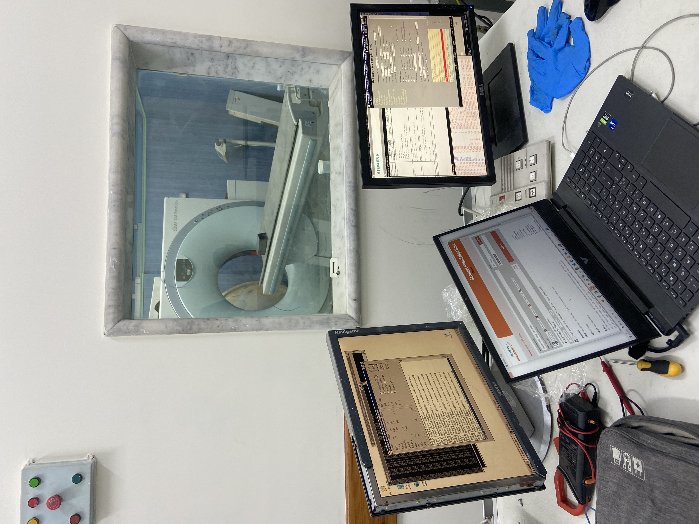
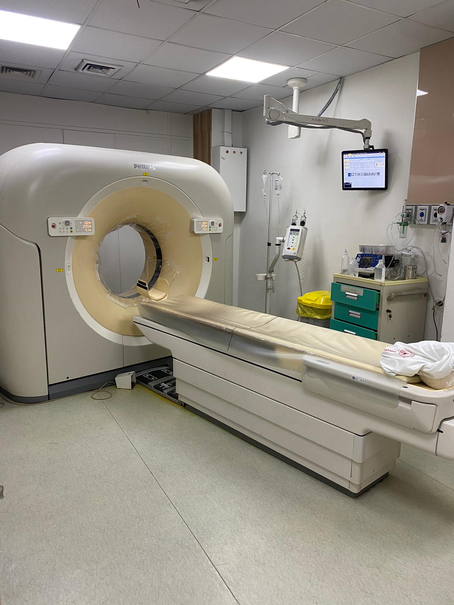
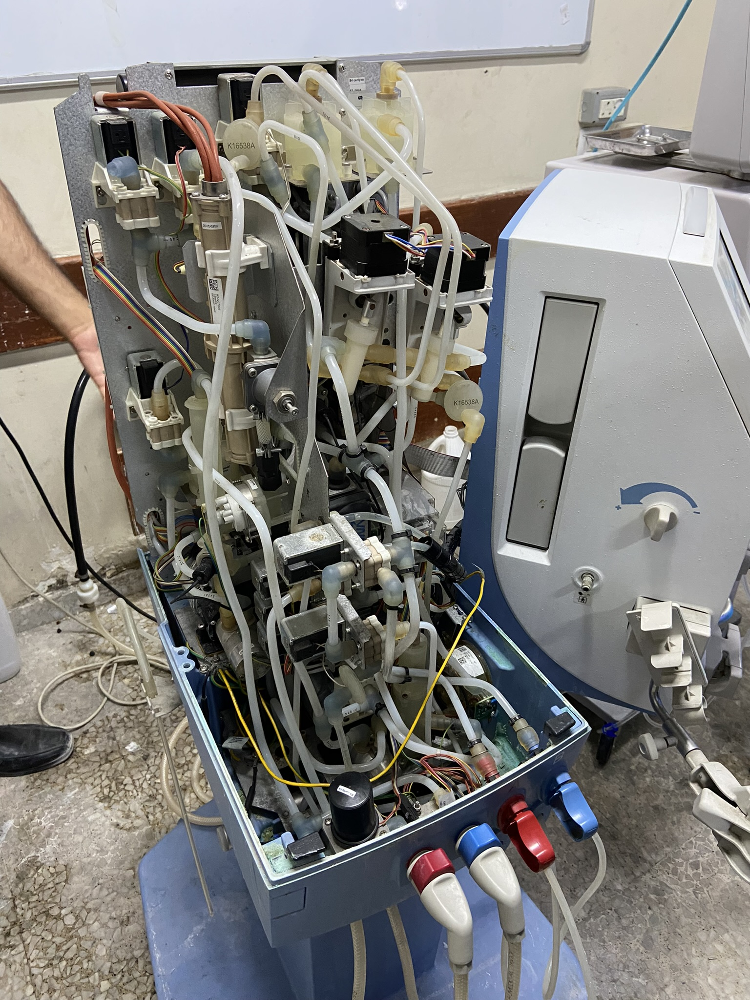
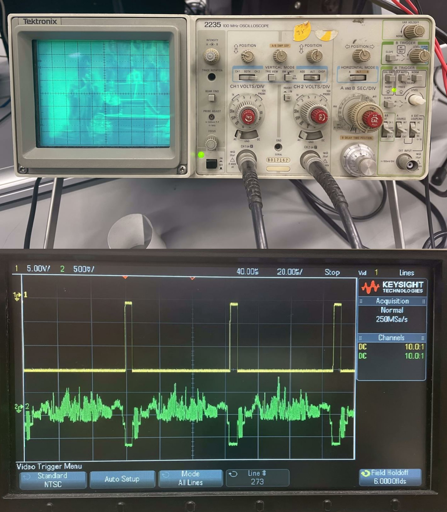
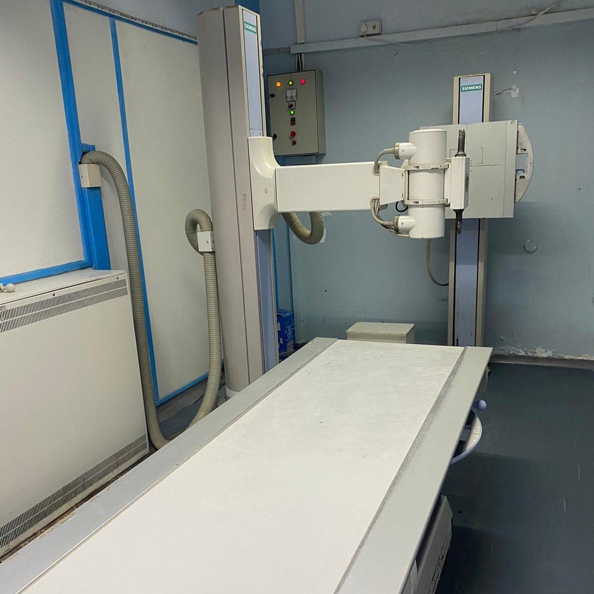
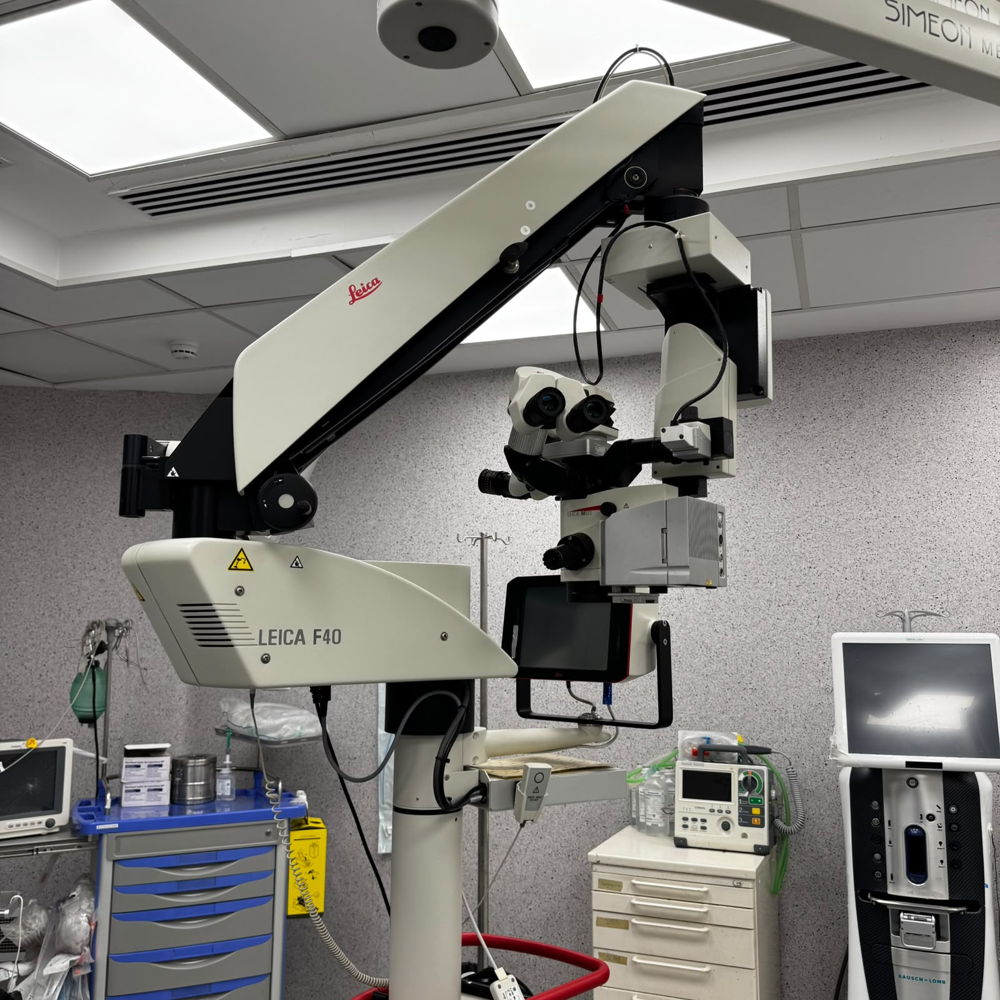
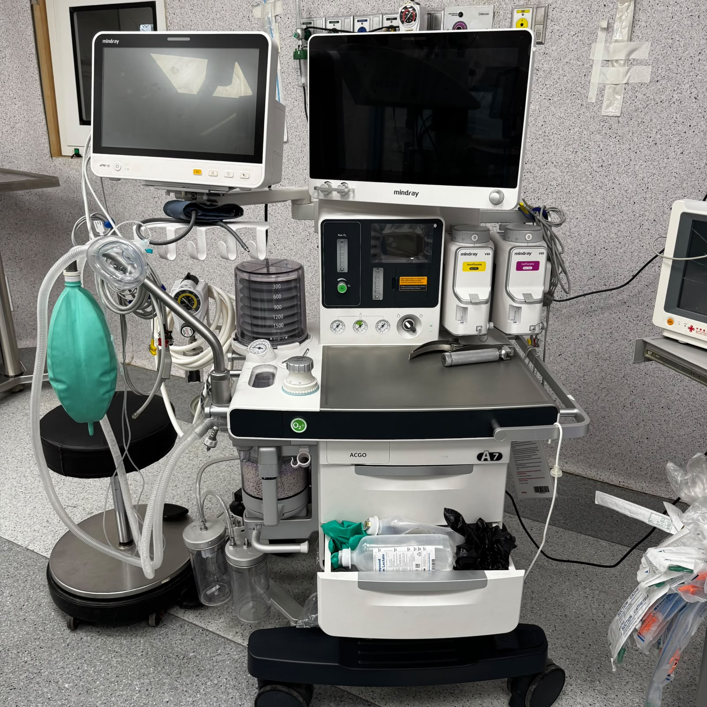

About
Mahmoud
I am a Biomedical Engineering graduate with hands-on experience in medical electronics and hospital environments, focused on applying engineering to improve patient care and healthcare systems.

Hands-on clinical training
Biomedical instrumentationDuring my biomedical engineering studies, I participated in practical training inside hospital environments, assisting medical staff and gaining direct exposure to real diagnostic equipment and clinical workflows.

Electronics and signal analysis
Technical projectsI worked on electronics and signal processing projects, using laptops, test instruments, and simulation tools to design, debug, and analyze medical electronic circuits and measurement systems.

Medical device commissioning
Hospital internshipI assisted senior engineers in installing, testing, and commissioning medical devices in hospital departments, ensuring safe operation and proper integration into the clinical environment.

CT control workstation
Imaging softwareI gained experience working with CT control consoles and imaging software, monitoring scan parameters, reviewing acquired images, and understanding how system settings affect diagnostic image quality.

CT scanner operation & safety
Radiology departmentDuring my hospital internships, I was exposed to CT scanner operation, room layout, and safety procedures, observing how biomedical engineers support radiology staff in maintaining reliable and safe imaging services.

Medical device maintenance
Maintenance and repairI participated in troubleshooting and repairing complex medical equipment, inspecting internal components, wiring, and fluid circuits to identify faults and support preventive and corrective maintenance tasks.

Oscilloscope & signal analysis
Electronics laboratoryI worked with analog and digital oscilloscopes to visualize and analyze electrical signals, measuring waveforms, noise, and timing behavior as part of my training in medical electronics and circuit diagnostics.
Recent
Projects
I have worked on several biomedical engineering projects involving the design, testing, and validation of electronic circuits for medical devices. These projects strengthened my skills in sensor integration, signal conditioning, and reliability testing.


{kind=link}
{kind=link}
Education
-
Bachelor degree of Engineering
October 2025Studied biomedical instrumentation, medical electronics, and healthcare technologies, with a strong interest in applying engineering solutions to improve patient care and support resilient healthcare systems.
-
High School Diploma
July 2020Completed my secondary education with a strong interest in science and engineering, which later led me to pursue Medical Devices Engineering.
Resume
A detail-oriented Biomedical Engineer with hands-on experience in hospitals and medical device companies, combining strong foundations in medical electronics, circuit design, signal processing, and bioengineering applications.
-

Al-Rantisi Specialized Hospital for Children | Junior Electrical Engineer
Apr 2025 - Aug 2025Supported the maintenance and performance evaluation of medical devices in a highly sensitive pediatric setting. Handled technical information with strict confidentiality and professionalism.
-
Abo Jehad Yaseen Co. For Generators | Data Entry
Jan 2025 - Apr 2025Responsible for accurately entering and updating generator-related data using the company’s information systems to ensure data quality and consistency.
-

Al-Quds Hospital – PRCS | Junior Biomedical Engineer
Jan 2023 - May 2023Contributed to the technical evaluation, installation, and acceptance testing of biomedical devices across different departments. Maintained various medical devices to ensure safety and functionality.
-

Al-Shifa Medical Complex | Engineering Intern, Medical Devices
Jul 2022 - Dec 2022Supported the rehabilitation department by assisting patients in the proper use of medical devices. Volunteered in multiple engineering units, including mechanical, electrical, and biomedical departments.
-

Intermedpal Company | Engineering Intern
Jan 2022 - Apr 2022Assisted in the installation, configuration, and testing of medical devices in clinical settings. Participated in quality assessments of device prototypes and collaborated with engineers.
Languages
Arabic (Native)
English (Advanced)
Italian (Beginner)
Technical Skills
Instrumentation & Hardware
ECG/EEG Signal Acquisition, CT Scanner Maintenance, Oscilloscopes, Function Generators, Multimeters, Soldering & PCB Troubleshooting.
Software & Simulation
MATLAB (Signal Processing), LTspice (Circuit Simulation), Cadence (VLSI Design), Tinkercad (Digital Logic), MS Office Suite.
Standards & Compliance
Knowledge of ISO 13485 (Medical Devices), Preventive Maintenance Protocols, Clinical Workflow Integration, Patient Safety Standards.
Certifications
Professional credentials and verified technical achievements.
-
Biomedical Equipment Technology Specialist
Issued by: [Organization Name] | [Date] -
Advanced Signal Processing in Medical Devices
Issued by: [Organization Name] | [Date]
References &
Publications
-
[Title of Academic Paper or Book]
Authors | Journal/Publisher | Year
View Document -
[Standard or Technical Manual Title]
Organization/Standard Code | Relevant Application Area
Contact
Mahmoud Alyazji
Feel free to reach out for collaborations, project inquiries, or biomedical engineering opportunities.